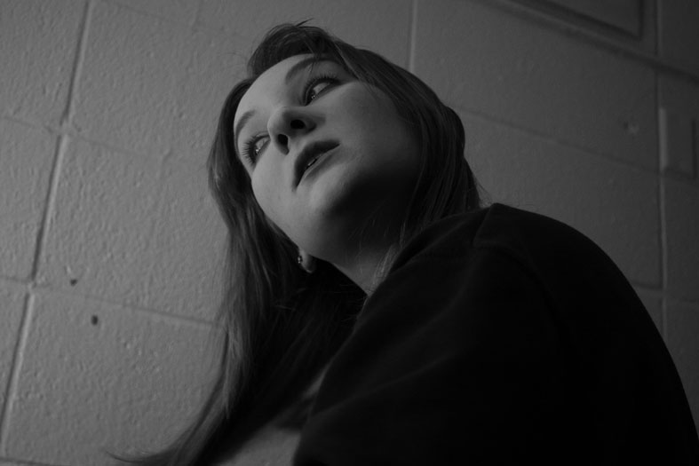
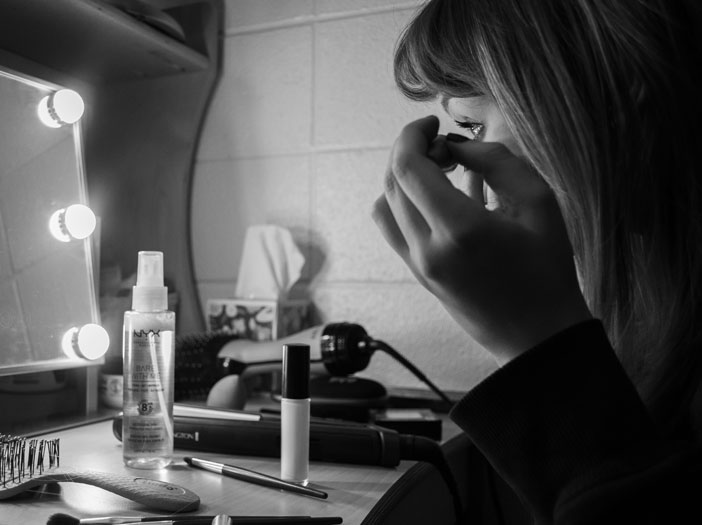
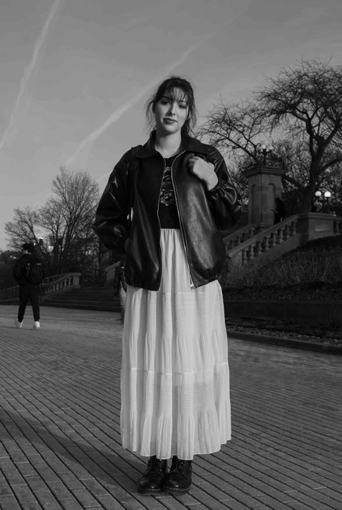
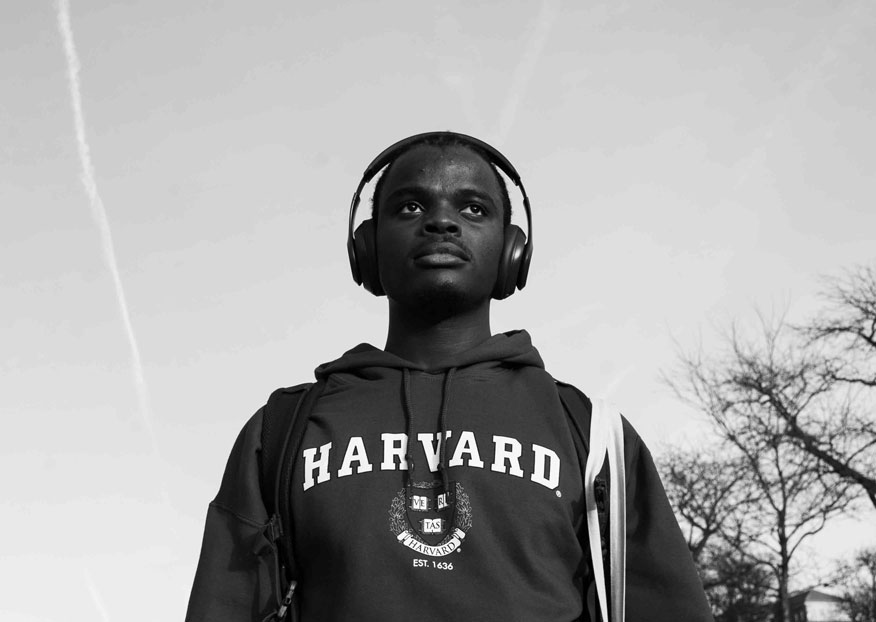
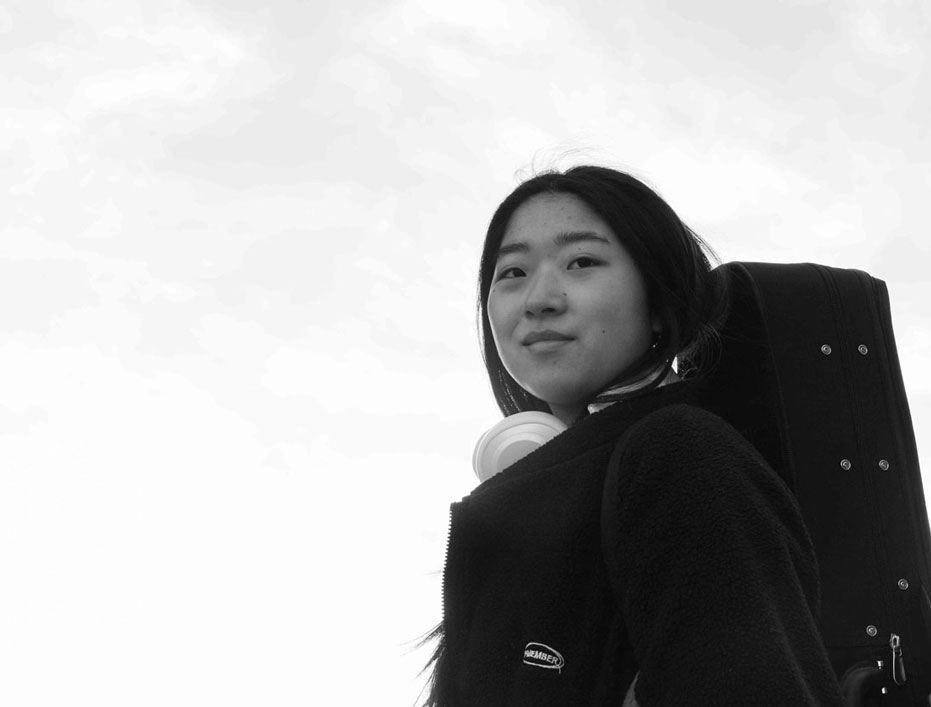
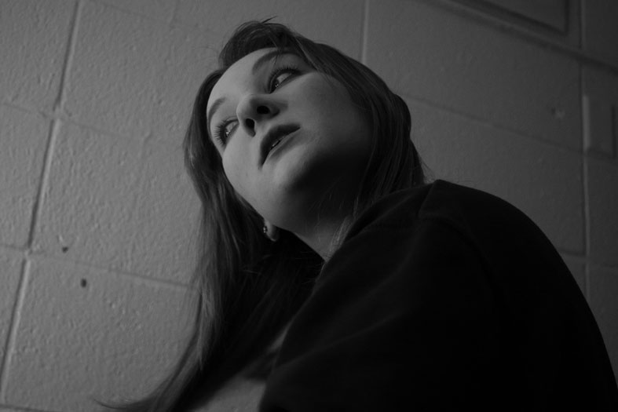
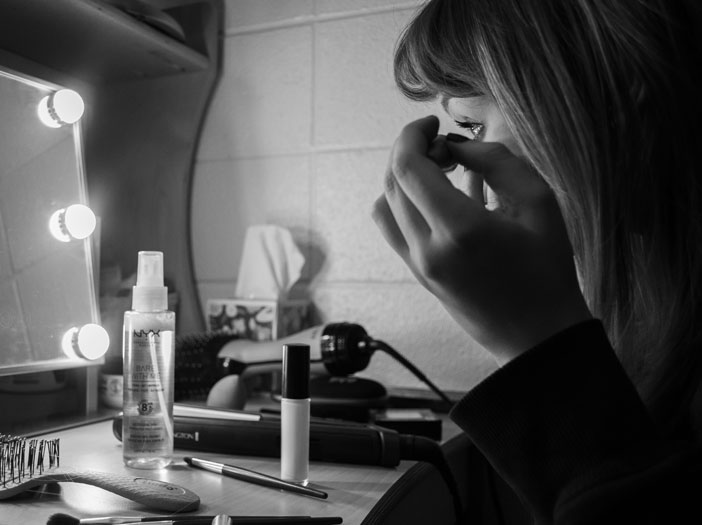
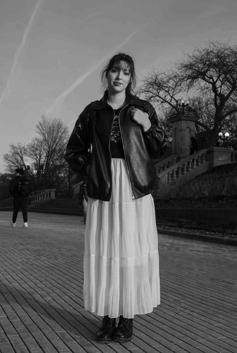
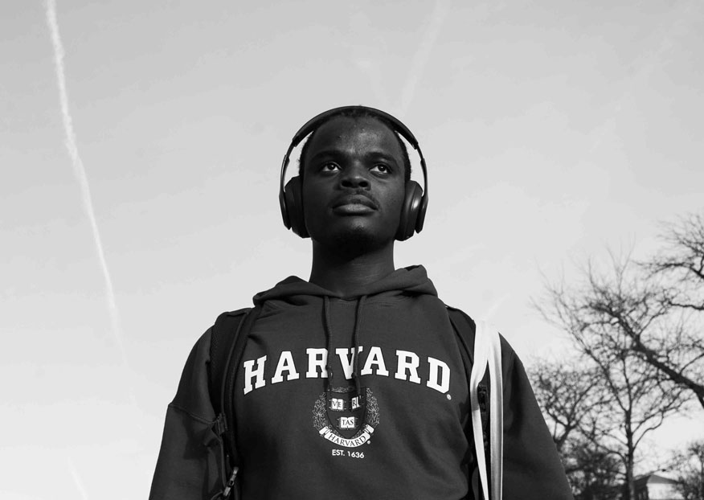
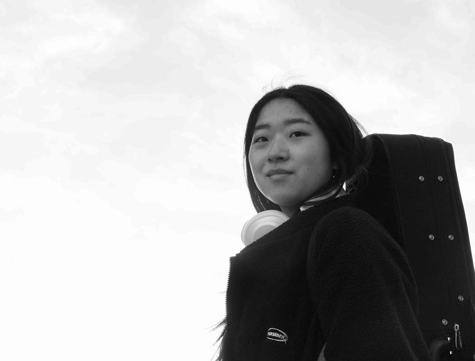

Whenever I am making a portrait I ask myself, what am I trying to communicate with this image? And how would I want to be photographed? It is important to immerse yourself in the environment of the people you are photographing to understand who they are and what they stand for. This way, you can communicate their personality and essence through the images you make.
One of my biggest interests and hobbies is music. Whether I’m playing my guitar, listening to it on my headphones, or photographing it live. Music fuels my everyday life and accompanies me everywhere I go. As I enter deeper into the world of photography, it has been an honor to take pictures of bands and music venues. There is nothing like capturing the moments of a great performance.
Being a photographer exposes you to so many diffeent types of people on a day to day basis. Asking to take pictures of someone can initiate a friendship and lead to more work oportunities. In order to take the pictures in my music collection, I asked my friend if I could photograph his band. The band really enjoyed my work and later asked me if I could take professional pictures for their jazz band group. This helped me form new connections and has led me to work with many other musicians. Taking pictures is a great conversation starter and an awesome way to meet people.
Dreams have always been facinating to me. For this collection of photographs I wanted to achieve a surreal, angelic, and dreamy effect by playing around with in-camera filters. In order to achieve this look I took a crafty approach and made my own camera filter. This process taught me that you can get really interesting camera effects without spending a single penny.
I love waiting to capture just the right moment. It is important for me to capture the authenticity of the people I photograph. No matter how many pictures I have to take, being patient and on the lookout for that key moment is worth it. Taking candid pictures of people is probably one of my favorite types of photography and I always love the results.
Looking at objects from a different perspective or lighting can drastically change the mood and feeling of the image. I enjoy doing close-ups and playing around with my light sources to showcase the dramatic beauty of the items I am photographing. With still-life photographs it is a lot easier to move things around and take your time carefully aligning things as they are a lt easier to work with than humans. Its interesting seing how you can arrange things to tell a different story every time.
Every day I try to experiment with my photography. I find long shutter speeds to be really fun to play with. I believe that the blurriness and motion provide a different mood to portraits and it can be a great tool for storytelling. every image is unique and often it’s very hard to duplicate the same motion more than once, which makes these photographs special and unique.